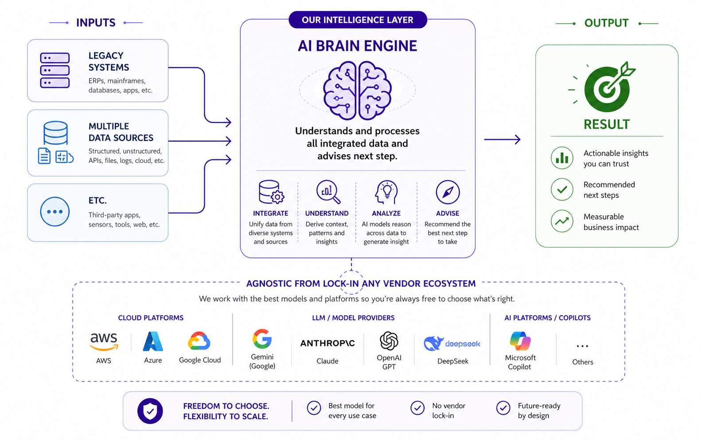
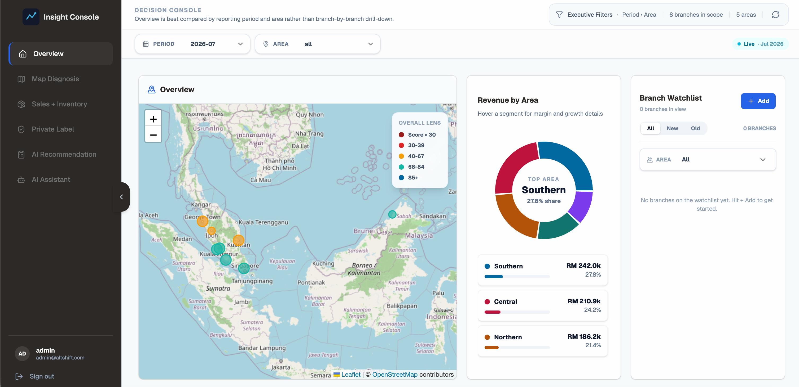
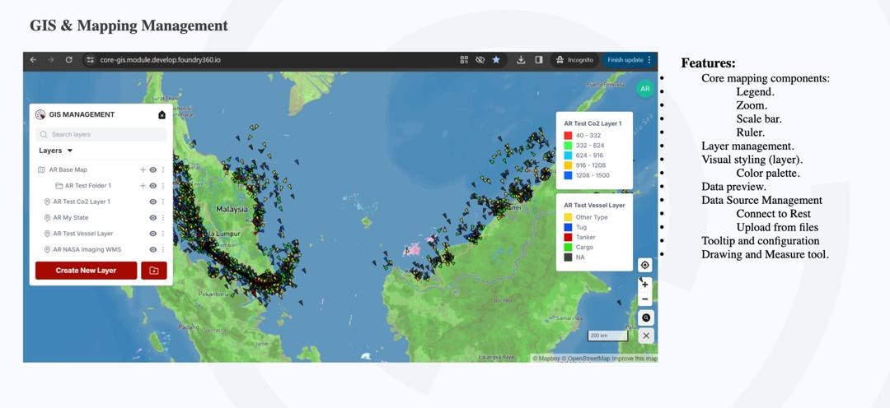
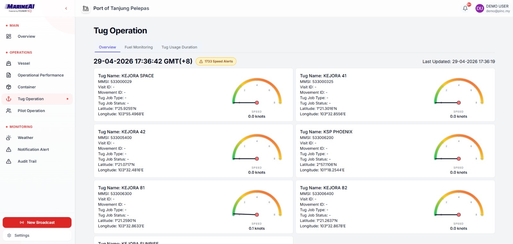
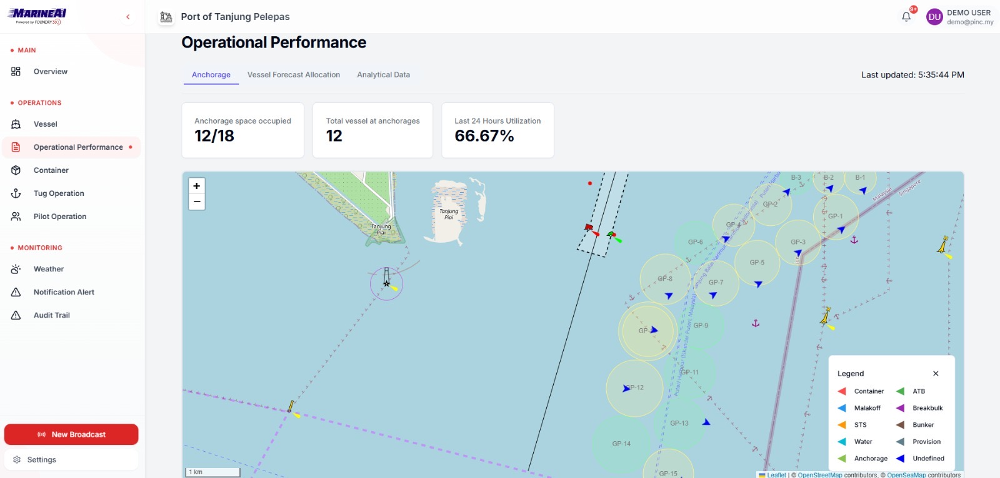
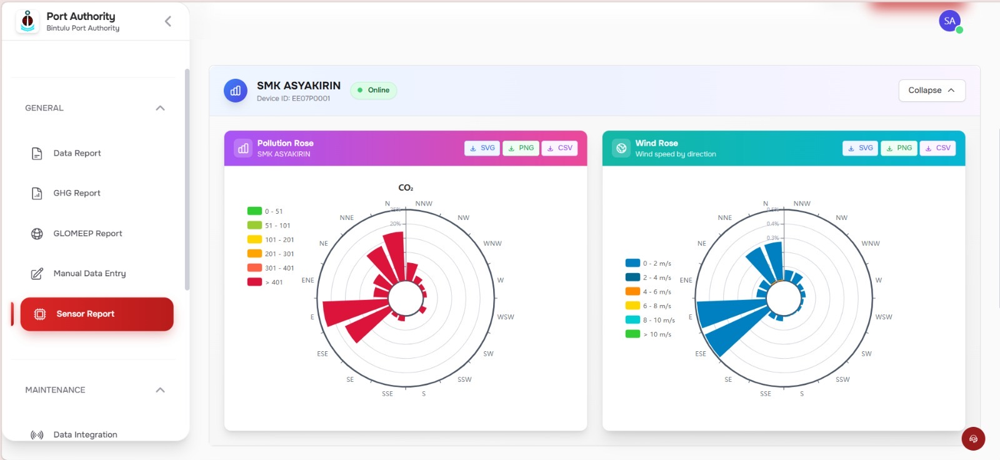
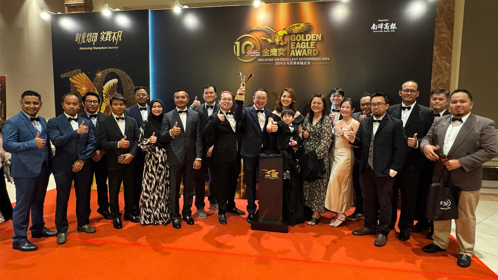
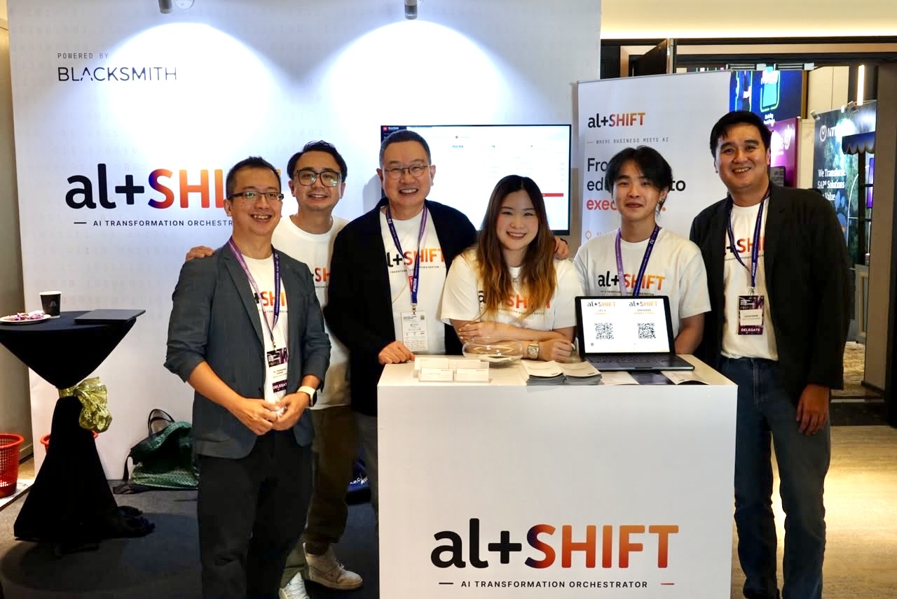

AI Transformation
That Actually Delivers.
That Actually Delivers.
From education → execution.
Not theory. Real systems. Real outcomes.
Not theory. Real systems. Real outcomes.
01 / 18
The Reality
Most AI initiatives fail at execution.
- Too many tools
- No clear ROI
- Teams stuck in experimentation
02 / 18
The Obstacle
Where businesses get stuck.
- Don’t know where to start
- Internal capability gap, legacy systems
- Vendors push tools, not outcomes
03 / 18
04 / 18
Our Purpose
We bridge knowing
and doing.
and doing.
Strategy + Build + Optimise.
Not consultants only. Not dev shop only.
Not consultants only. Not dev shop only.
👉 Execution-driven transformation
05 / 18
The Infrastructure
The AI Brain Engine.

06 / 18
The Outcome
What you gain.
- Reduce manual work
- Faster decisions
- Cost optimisation
- New revenue opportunities
07 / 18
Specific Impact
Tourism.
- Predict visitor demand & optimise capacity
- Personalise guest experiences
- Real-time performance dashboard
08 / 18
The Proof
We've built real systems.
- Retail & Pharmacy (🇲🇾 Nationwide)
- Remote monitoring platform (🇲🇾 Nationwide)
- Marine AI systems (Johor)
- ESG digital platforms (Bintulu)
👉 Not theoretical work
09 / 18
Retail & Pharmacy (🇲🇾 Nationwide)

10 / 18
Remote monitoring platform (🇲🇾 Nationwide)

11 / 18
Marine AI systems (Johor) [1/2]

12 / 18
Marine AI systems (Johor) [2/2]

13 / 18
ESG digital platforms (Bintulu)

14 / 18
The Drivers
Who drives execution.
Josef Wong
Managing Director
Seasoned entrepreneur with extensive
experience across
finance, technology, retail, and construction.
Ts. Chong Theng Hui
Chief Technology Officer
AI graduate & practitioner. Leads execution
at AltShift,
deploying
scalable AI and data
systems across industries.
RP
Ryan Pang
Chief Finance Officer
Finance and M&A professional aligning
execution, capital readiness, and enterprise value.
👉 Direct accountability
15 / 18
The Infrastructure
Complete Execution Team.


16 / 18
The Agnostic Approach
We don’t push tools.
- No lock-in
- Fit to your stack
- ROI-first decisions
17 / 18
The Orchestrator
From
education → execution.
education → execution.
- Diagnostic session
- Identify high-impact use case
- Pilot → measurable outcome
🙌 Your trusted technology partner
18 / 18